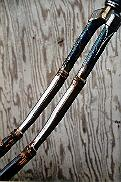

The chopper fork is, of course, the germinal element for most of the fleet. One reason for this is that no bicycle design induces the feeling of intoxication better than the chopper. This is important because one will want to be as drunk as possible in order to survive the high incidence of crashes that accompany Chunk activities. A related reason is that chopper riding is an excellent tool for self-actualization: one who can dominate a chopper finds that everything else in life is that much easier to dominate.
There are a few general comments to be made about fork construction and destruction. The point where the fork enters the head tube receives more stress than anywhere else on a chopper. Because of this, thick and sturdy parts should be used for this component. Modern, "high performance" forks are out. Old, clunky forks made of thick steel are in. Welding and brazing performed in this area also tends to weaken the machine, so be careful with that torch. Redundancy is the key. Either use a design that distributes stresses, or don't mess with that area at all; extend after the bifurcation.
After the structural integrity (or lack of same) of a fork design is ensured, the effect of the fork on the geometry of the bicycle must be taken into account. Draw a vertical line from the pilot's ass to the ground. The rear hub must be behind this line. If the hub is before the line, the front wheel will never touch the ground, and the bicycle will be unridable. If the hub is at or just behind the line, the bicycle will wheelie at the slightest provocation - which is fun, but should not be the case for every cycle constructed; what is the use of riding if one can't run things over? Putting the line well before the hub puts more weight on the front wheel, and makes the bicycle easier to steer, at the cost of higher stress on the fork. Experiments with weighting the fork to allow the line to be moved back have proven unsuccessful, since the weight tends to wrench the fork into a turn.
For a given frame, the length of the fork (along with the size of the front wheel) also affects the angle of the stem. This angle, the rake of the fork, and again the size of the wheel, determine the trail of the bicycle. To determine the trail, draw an imaginary line that passes through, and parallel to, the head tube and extends to the ground. The trail is the distance between the point where this line hits the ground and the contact patch of the front tire. The effects of the trail on steering are interesting; a document is being prepared by our technicians. In the meantime, you will have to experiment for yourself.
We will now discuss specific models.

The simplest method of chopper construction requires several extra forks, as shown above in Stars and Stripes Forever.
First, saw the tips off of the fork of the host bike, so that the dropouts for the front axle are removed. Saw the blades off of each donor fork as well, just after the bifurcation point, to create two separate blades each. Saw the tips off of each pair of donor blades except for one. This last pair will become the end of the composite fork.
Slide the first pair of donor fork blades onto the host fork. You may have to squish the wide ends of the donor blades in a vise for a better fit. Hammer these blades down well, making sure that the resulting composite blades are of equal length. Continue with each pair of donor forks. A rubber mallet works best for the final pair, to avoid damaging the dropouts, but a metal hammer should be used for all of the other pairs to ensure that they are tight. By the way, bearing races which contain little dents formed by the bearings are known as "brinneled".
Experiment with installing some pairs of blades with the bend pointing down, to alter the rake and trail. If you can ride a bike with over four normal-sized forks, each pointing forward, then you are mighty indeed.
If you don't have access to a brazing torch, you can simply ride your chopper as-is, if you have a small front wheel. The forks will eventually sproing apart, but will in all probability remain assembled as they do so, allowing you to stop without injury, hammer them back into place, and continue riding. Eventually, however, you will need to replace the tips, as the dropouts will break from all that hammering. If you can, brass braze the forks together. Adding a bar across two of them will help the fork to resist torque, and will allow you to use a larger front wheel, if you want.
The BMX-extendo design, as manifested in the Cherry-Popper (a.k.a the De-Boner) shown above, is also very simple, but requires the use of a torch. An arc-welder will suffice if you have thick enough forks and pipes, but as with all fork modifications, brazing is recommended. The name comes from the fact that a BMX type fork must be used, i.e. a fork where the blades are parallel and straight, and rake is supplied by forward mounted dropouts The method should be apparent from the following diagrams.
Fig 1. Before extension.
Fig 2. After extension.
We now jump ahead to the current pinnacle of Chunk technology, the design that gets us across town, the flux point of the wide-band chunkulation field, the result of intense research, etc., etc.. Feast your eyes on the sleek fork of Baby, above. Dangerous-looking, is it not? Were that single narrow shaft to break, the pilot would surely be impaled. While structural failure in an unmodified element of the fork is always a concern, this construction method is as solid as the Rock of Ages.
Fig 3. Bladeless host fork.
The first step involves sawing off the blades of the host fork, as close as possible to where they join the shaft. File the remaining shaft until it is a cylinder again. This should produce a single tube with a wide base. In the image above, the bottom part of the fork points to the left, and the blades used to be attached to the wide part.
Fig 4. Lengthened host fork (shortened to fit in diagram).
Next, obtain a pipe with the same diameter and thickness as the wide (bottom) end of the host fork. This pipe (along with another while fork) will form the visible shaft of the composite fork; it should therefore be as long as you dare. Butt-weld this pipe to the wide end of the fork, and file it smooth.
Fig 5. Lengthened host fork with reinforcement sleeve
(shortened to fit in diagram).
The next step requires a pipe which slides very snugly over the previous butt-weld, about 8 to 14 centimeters long, and of roughly the same wall thickness as the previous pipes. Slip this pipe over the lengthened tube, so that its center covers the butt-weld, and lap-weld it on.
Without this sleeve, the butt-weld would snap. The sleeve distributes the stress on that weld to both of its edges.
Finally, slide the steer tube of another donor fork into the bottom end of the lengthened host fork, and weld it in. Some sort of intermediate pipe may be necessary to shim it in securely. This part of the fork is sturdy, however - it could even be ridden without welds, if the front wheel never left the ground - and one can get away with that sort of thing there.
Named after the cycle which pioneered its use, the Granddaddy Fork is simplicity itself. Start with a long pipe with a fork affixed to the bottom, as used in the Sleeved Tube Fork. Find a solid tube that will both snugly fit in this tube and through the bottom hole of the steer tube of a host fork (some shimming will be required). Insert it into the other end of the pipe so that it protrudes a ways, and weld or braze it there. Take the host fork, saw off the blades just before their bends, and smush the blades together in a vise so that they are just as far apart as the pipe is wide. Then slide the assembly together so that the pipe is snug against the host fork and the solid tube is within the host fork's steer tube. Braze at the three points of contact - top of tube and end of two blades.
This fork is surprisingly strong - our materials have failed before our welds have.
The Orb Mark IV has been broken several times. We learn from our mistakes at Chunk Labs, however - except for the mistake of getting on our bikes in the first place.
The Orb Mark I was one of the first machines that we created. The lower part of the fork was a gazelle model, which was attached to a pipe in the manner of the lower forks of Baby and Granddaddy. This pipe was then butt-welded to the bottom of the steer-tube of a fork. We were young and stupid then.
This design, of course, led to the shedding of blood when the butt-weld failed. For the Orb Mark III, we obtained a long, thick, steel steer tube from an old bombproof Raleigh three-speed, and lap-welded it to the pipe, so that the bearing cone sat on the ledge formed by the end of the pipe. This weld held, but the steer tube itself snapped - all of the stresses were delivered right to the end of the pipe.
We then utilized the fact that the top of this particular gazelle fork is such that the shoulders of the fork crown protrude at a 90 degree angle. Furthermore, each shoulder has a hole in it where the end of the fork blade extends through the crown. Forks like this are usually found on cheaper children's bikes.
We lap-welded a smaller flange to extend from the top of the pipe, as in Granddaddy. This flange was inserted into the hole at the base of the steer tube of an upper fork. The tips of the blades of the upper fork were sawn off, inserted into the holes on the shoulders of the lower fork, and brazed in place.
The net result was a fork with a triply redundant connection to the frame and flexibility at the bottom.
Safety was not provided so much by solidity, but by redundancy and the way that each of the pieces fit together without the welds. This feature saved the life of an unfortunate Chunker on the Orb's final ride. The fork was held together by gravity long after the welds had failed, and only after dismounting did separation occur. R.I.P. the Orb Mark IV.
The Rail simply uses a minibike fork with hydraulic shocks, obtained when we ran the local gas-huffing motorbike gang out of town.
Although it is hard to see in this picture, the steer tube of this fork is too long for the frame's head tube. This is remedied by sawing the required length off of a donor head tube, sticking it on the host head tube, and attaching the top bearing races to it. We intend to braze it together some day.
Chopulator's forks are constructed along the lines of the BMX-Extendo model, in that the straight tubes of a BMX fork are extended. However, the top fork is aligned vertically, not horizontally, and each of the extended tubes ends in a curved fork, both of which grab the axle. Beautiful.
The Trifurcator is a simple model in which two whole forks are simply welded together, much like a cross between the tops of Granddaddy and the Orb.
(Return to C.H.U.N.K. Technical Documentation)
| Copyright 2003 Megulon Five <megulon5@dclxvi.org>. |

|
This work is licensed under a Creative Commons License. | Last modified 12 September 1997. |